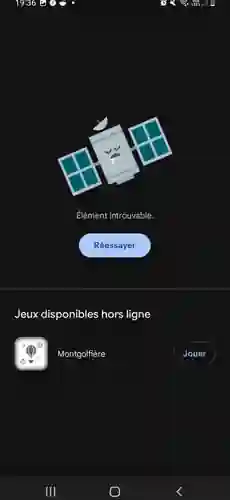

Minuteur de sommeil
Programmez une durée puis choisissez les actions à effectuer à la fin du compte à rebours.
Stopododo combine un minuteur de sommeil, un filtre d’assombrissement et des actions de fin de minuterie pour rendre l’utilisation de votre téléphone ou tablette plus agréable avant de dormir.

Programmez une durée puis choisissez les actions à effectuer à la fin du compte à rebours.
Ajoutez un filtre d’écran pour réduire la luminosité au-delà du minimum proposé par Android.
Stopododo peut couper le son et tenter de mettre la lecture en pause lorsque le lecteur utilisé le permet.
La version Premium permet d’obtenir des teintes plus chaudes le soir et de les combiner avec l’assombrissement.
Une option Premium peut étendre le filtre à certaines zones système compatibles, avec activation volontaire du service d’accessibilité.
Un achat unique à 2,99 € débloque les minuteries jusqu’à 240 minutes et les fonctions avancées.
Stopododo ne contient pas de système publicitaire ni d’outil d’analyse d’audience. Les réglages de l’application sont enregistrés localement sur l’appareil. L’achat Premium est géré par Google Play.
Le service d’accessibilité est facultatif et sert uniquement au filtre plein écran avancé. Stopododo est configuré pour ne pas récupérer le contenu des fenêtres et n’utilise pas ce service pour lire ou analyser ce qui est affiché à l’écran.
En savoir plus sur l’utilisation du service d’accessibilité →
Trois captures provenant de l'application et un visuel officiel Play Store.
Un seul achat Premium pour les fonctions avancées : jusqu’à 240 minutes, filtre lumière bleue, filtre plein écran avancé et volume précis.
Premium · Achat unique 2,99 €Choisissez la durée qui vous convient avant de vous endormir.
Réduisez la luminosité et, avec Premium, ajoutez un filtre de lumière bleue.
À l’échéance, l’application applique les actions choisies, selon les possibilités de l’appareil.
Oui. Les fonctions gratuites comprennent un minuteur jusqu'à 15 minutes. Premium est un achat unique à 2,99 €, sans abonnement.
Stopododo peut couper le son et tenter de mettre la lecture en pause si l’application vidéo le permet. Le verrouillage de l’écran est également proposé avec votre autorisation.
Non. Stopododo ne demande pas de compte. Les préférences restent sur l’appareil, et Google Play gère l’achat Premium.